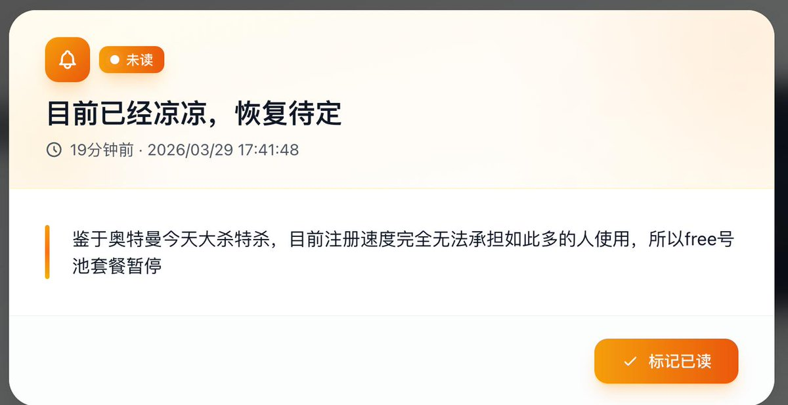
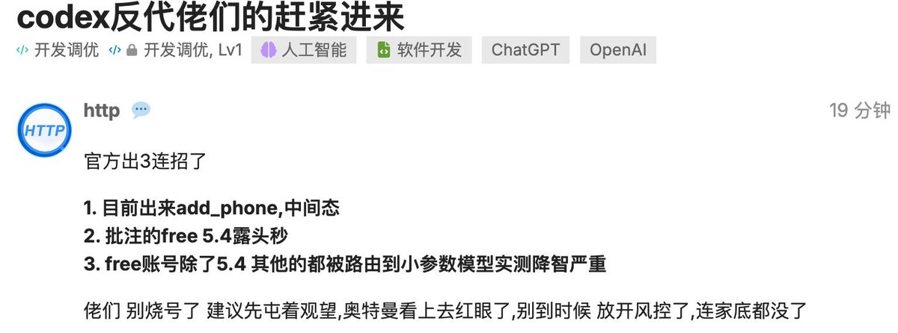

奶昔🥤
@realNyarime
@Wcowin_ @Gorden_Sun 这不是骂，这是事实
想想为什么注册OpenAI号露头就秒？


奶昔🥤
@realNyarime
佬友昨日刷的7w多个ChatGPT免费号全军覆没，新注册OpenAI号露头就秒，看样子是奥特曼拿到融资就开杀了！
难怪大量API中转站的free号池严重供应不足，多家Codex反代套餐均已暂停供应。闲鱼的team卡商很多都是一卡多卖，开了也会很快封的，能过的卡头也就那几个，普号注册的成功率暴跌啊。 https://t.co/dYf2x293Ol
𝚆𝚌𝚘𝚠𝚒𝚗
@Wcowin_
@realNyarime @Gorden_Sun 点赞，骂 L站的我都要来捧场